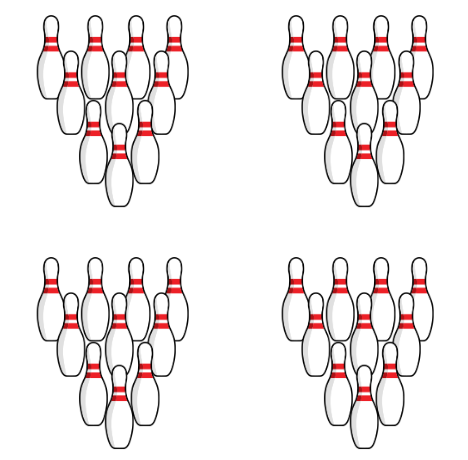
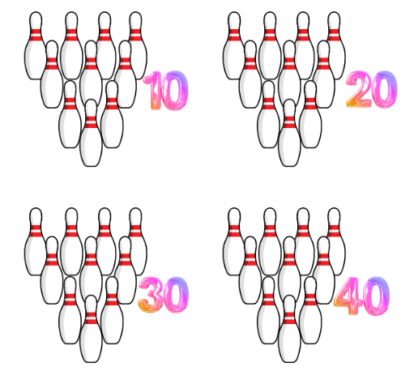
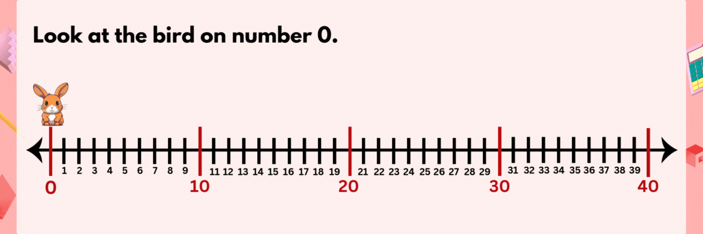
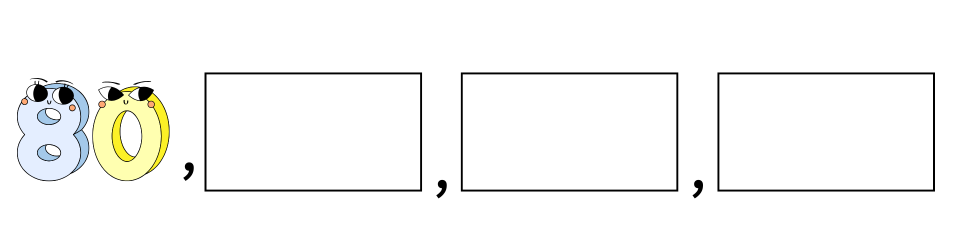
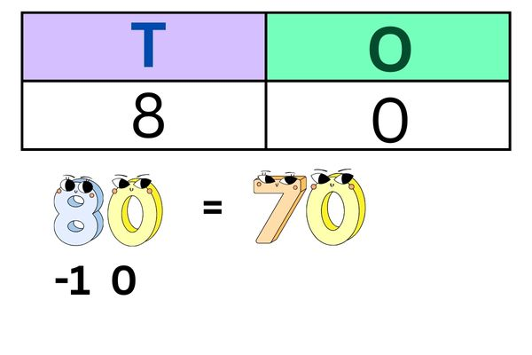
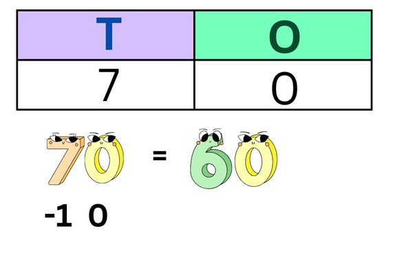
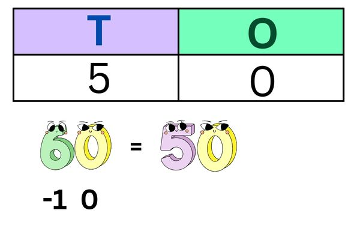
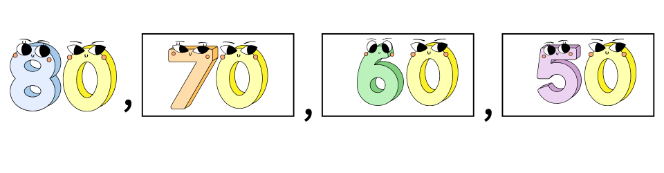

Look at the given picture, here are a few group bowling pins

Each group has 10 bowling pins.
So to find the total number of bowling pins quickly we will skip count by 10.

Therefore, there are 40 bowling pins in total.
Skip counting by 10s using the number line:
Here we skip nine numbers and jump to the tenth number.
Look at the Rabbit
Counting Backwards by 10s
When we skip count backwards by 10s, we subtract 1 from the tens digit while keeping the other digits the same.
If we want to skip count backward by 10s starting from 80:

Start with 80. The tens digit is 8. Subtract 1 from it, and you get 70.

Next, subtract 1 from the new tens digit (7), and you get 60.

Subtract 1 again from the tens digit (6), and you get 50

So the pattern looks like this:
